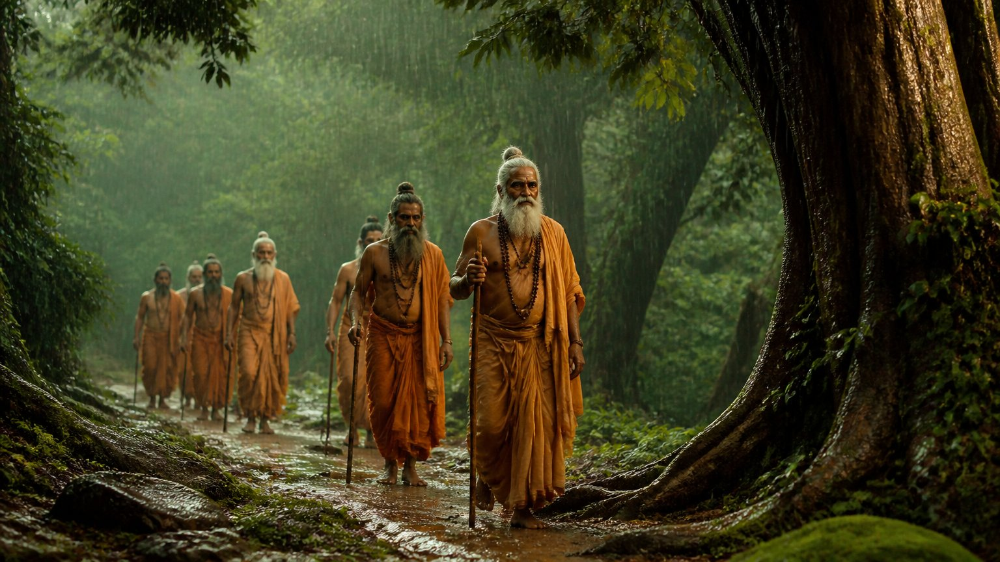
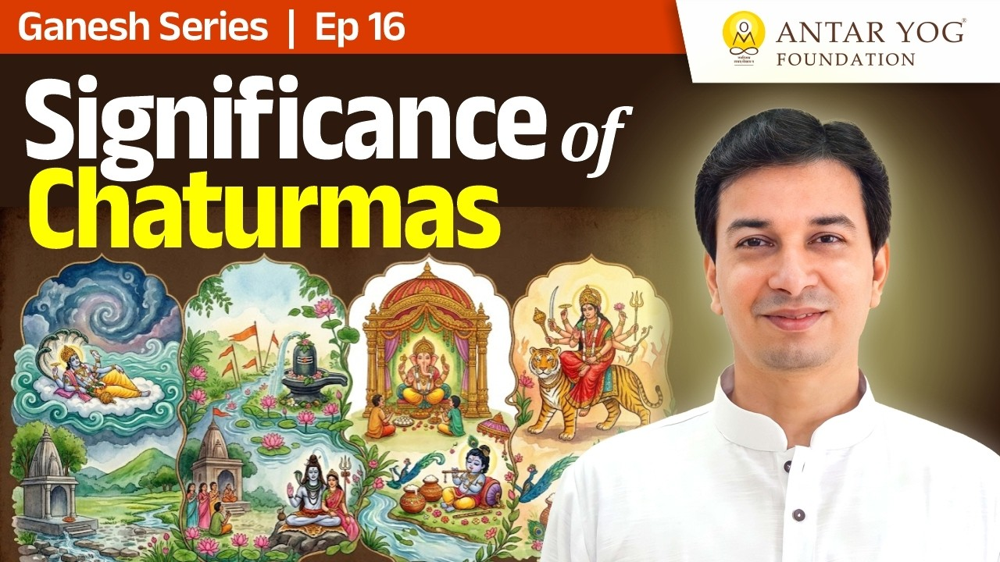

हर साल श्रावण आता है, त्योहार आते हैं, घंटियां बजती हैं, और फिर विवाहों का मौसम शुरू हो जाता है। पर क्या कभी आपने सोचा है कि अधिकतर त्योहार इसी समय क्यों आते हैं?
इस छोटे से प्रवचन में इस प्रश्न का उत्तर मिलता है, और साथ में एक ऐसा प्रश्न भी, जो हर साधक को हर साल खुद से पूछना चाहिए।
चातुर्मास: चार महीने का ठहराव
चातुर्मास यानी वर्षा ऋतु के चार महीने (the four monsoon months), जो श्रावण के आसपास से शुरू होते हैं। हमारे अधिकतर त्योहार इन्हीं महीनों में आते हैं।
इसका कारण समझने के लिए पहले यह जानना होगा कि इनकी रचना किसने की। उत्तर है: ऋषि-मुनियों ने।
जब ऋषि पैदल चलते थे
उस समय न गाड़ियां थीं, न हेलीकॉप्टर, न पक्के घर। ऋषि आज की तरह किसी ऑनलाइन माध्यम से घर-घर नहीं पहुंचते थे। उन्हें स्वयं चलकर गांव-गांव जाना पड़ता था।
वे "ॐ भवति भिक्षां देहि" कहकर भिक्षा मांगते। जहां रात को रहने की जगह मिलती, वहां ठहरते, या गांव के बाहर सोकर अगली सुबह आगे बढ़ जाते। जंगल वाले क्षेत्र में सुरक्षा के लिए किसी के घर रुकते।
पर बरसात में यह सब बहुत कठिन था। कपड़े कम, चारों ओर कीचड़, कच्चे रास्ते, और खाने-पीने की समस्या।

चार महीने, एक गांव, पूरा मार्गदर्शन
इसलिए ऋषि वर्षा ऋतु में किसी एक गांव में ठहर जाते। गांव के मुखिया के घर, किसी प्रतिष्ठित व्यक्ति के यहां, या किसी मंदिर में। उस समय साधु-संत इतने थे कि हर गांव में कोई न कोई संत होते ही थे।
अब जब गुरु चार महीने वहीं रहने वाले हैं, तो उनके मार्गदर्शन में सारे उपक्रम (धार्मिक अनुष्ठान, rituals and observances) उसी समय करा दिए जाते।
आचार्य जी कहते हैं कि इसीलिए अधिकतर त्योहार इसी समय में आते हैं।
विवाह का मौसम इसके बाद ही क्यों?
त्योहारों के ठीक बाद विवाहों का मौसम शुरू होता है। क्यों? क्योंकि अब ब्रह्मचर्य (संयम और शिक्षा का जीवन-चरण) का पालन पूरा हुआ, जो सीखना था वह सीख लिया। अब व्यक्ति गृहस्थ आश्रम (household stage of life) के योग्य है।
नहीं तो जनवरी, अप्रैल या अगस्त में विवाह करने से क्या अंतर पड़ता है? मुहूर्त तो हम देखते हैं, पर क्या उससे पहले की तैयारी भी देखते हैं?
आप जिस अगले चरण की ओर बढ़ रहे हैं, क्या उसकी भीतरी तैयारी आपने की है?
हर साल का एक प्रश्न
त्योहारों का आध्यात्मिक अर्थ यह नहीं कि एक साल मना लिया और काम हो गया। वे हर वर्ष यह याद दिलाने आते हैं: मेरा अब तक यह हुआ या नहीं?
आचार्य जी समझाते हैं कि कोई व्यक्ति कहे कि उसकी शादी भी हो गई, वह बूढ़ा भी हो गया, मरने तक आ गया, फिर भी उसकी घंटी की टिंग-टिंग अभी तक बंद नहीं हुई।
अगर पूरा जीवन केवल बाहरी पूजा में ही बीत जाए, तो साधना और ध्यान कब होंगे?
पिछले त्योहार से इस त्योहार तक, आपके भीतर सच में क्या बदला?
रूप की कल्पना साधकों के हित के लिए
प्रवचन की शुरुआत इसी सूत्र से हुई थी:
साधकानां हितार्थाय ब्रह्मणो रूपकल्पना।
"निराकार ब्रह्म (परम सत्य) के रूप की कल्पना साधकों के कल्याण के लिए की गई है।"
(रामपूर्वतापनीय उपनिषद् १.७ का प्रचलित पाठ)
त्योहार भी इसी तरह बने। ऋषियों ने सामान्य जन के लिए साधना को प्रतीकों में ढाल दिया।
ऋषि हर बच्चे के बड़े होने तक रुक नहीं सकते थे। इसलिए वे माता-पिता को विधि दे जाते: बच्चे को यहां तक समझाना, यह सिखाना, फिर हमारे पास भेज देना, आगे हम करेंगे।
त्योहार कौन शुरू कर सकता है?
आचार्य जी बताते हैं कि आप और हम कोई त्योहार शुरू नहीं कर सकते; उसे कोई अधिकारी ही आरंभ कर सकता है।
कॉलेज के उत्सव कोई भी शुरू कर सकता है। पर धार्मिक त्योहार केवल वही आरंभ कर सकता है, जिसके पास उसका आध्यात्मिक अधिकार हो।
गुरु क्यों परमेश्वर से ऊपर हैं
गुरु का अपना काम तो पूरा हो चुका है। फिर भी वे शिष्य का भार उठाते हैं। इसीलिए हर धर्म में गुरु का स्थान परमेश्वर से ऊपर कहा गया है।
पर यहां दोनों ओर विवेक (discernment) चाहिए। गुरु को समझ हो कि शिष्य को कैसा बनाना है, और शिष्य को समझ हो कि उसे कहां तक निर्भर रहना है। जिसे यह समझ आ गया, उसे बुद्धि आ गई।
मुख्य बातें
- अधिकतर त्योहार चातुर्मास में इसलिए आते हैं क्योंकि उस समय ऋषि-मुनि चार महीने एक ही गांव में ठहरते थे।
- उनके मार्गदर्शन में सारे धार्मिक उपक्रम इसी काल में कराए जाते थे।
- त्योहारों के बाद विवाह का मौसम आता है, क्योंकि ब्रह्मचर्य की तैयारी के बाद ही गृहस्थ आश्रम का अर्थ है।
- त्योहार हर वर्ष आत्म-निरीक्षण का अवसर हैं: मेरी साधना कहां तक पहुंची?
- धार्मिक त्योहार कोई अधिकारी ही आरंभ कर सकता है।
- गुरु और शिष्य दोनों में विवेक चाहिए: शिष्य को जानना चाहिए कि कहां तक निर्भर रहना है।
